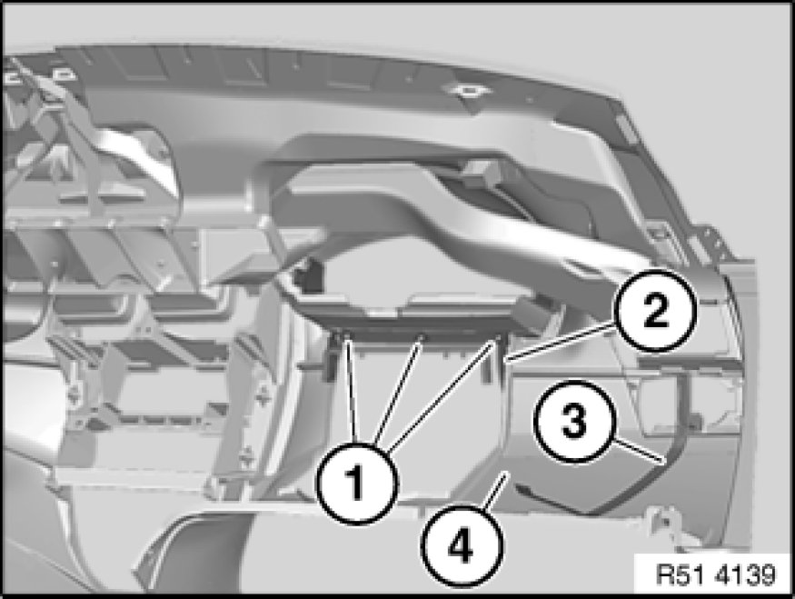
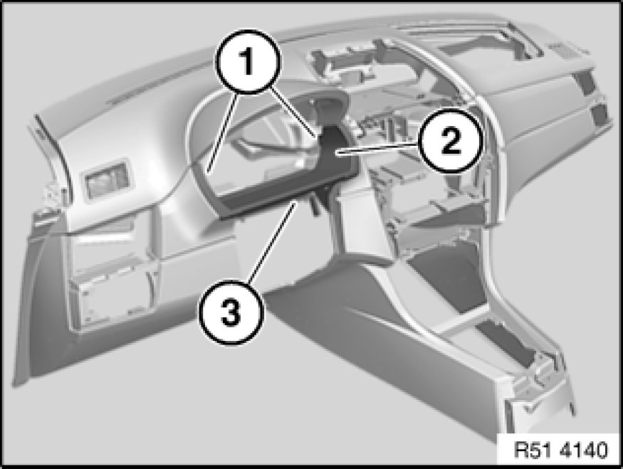
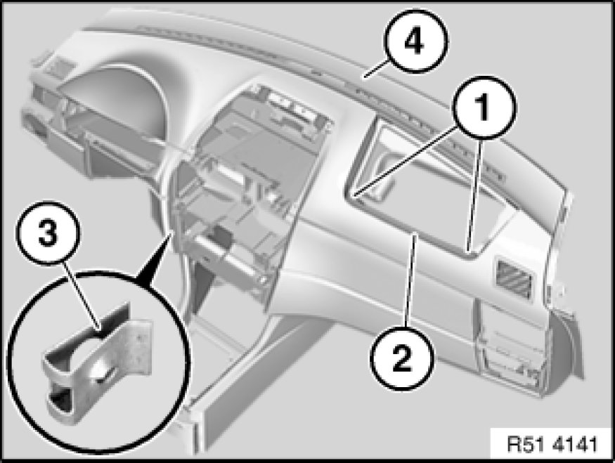

51 45 031 Replacing Instrument Panel Trim
51 45 031 - Replacing instrument panel trim

Necessary preliminary tasks:
- Remove instrument panel trim 51 45 030 Removing and Installing Instrument Panel Trim

Release screws (1) on gap cover for steering column (2).
Carefully pull off light switch wiring harness (3) secured with double-sided adhesive tape.
Installation:
Re-lay light switch wiring harness (3) in designated notch of instrument panel trim (4).

Release screws (1).
Remove trim from cutout for instrument cluster (2).
Remove gap cover for steering column (3).

If necessary, release screws (1) and remove trim (2).
Remove all metal nuts (3) from instrument panel trim (4).